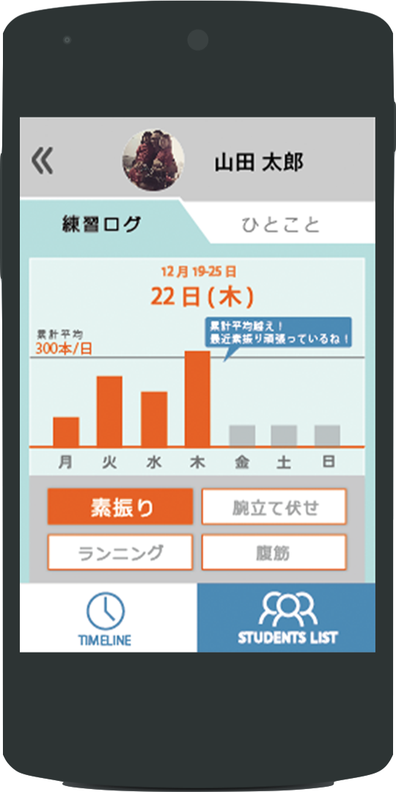
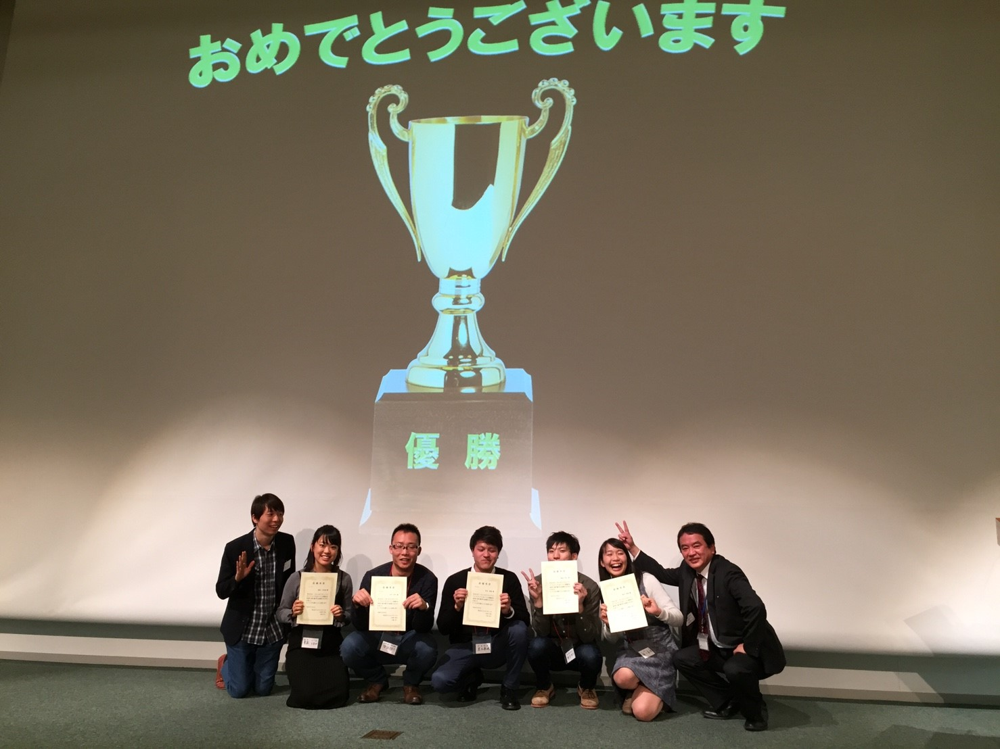
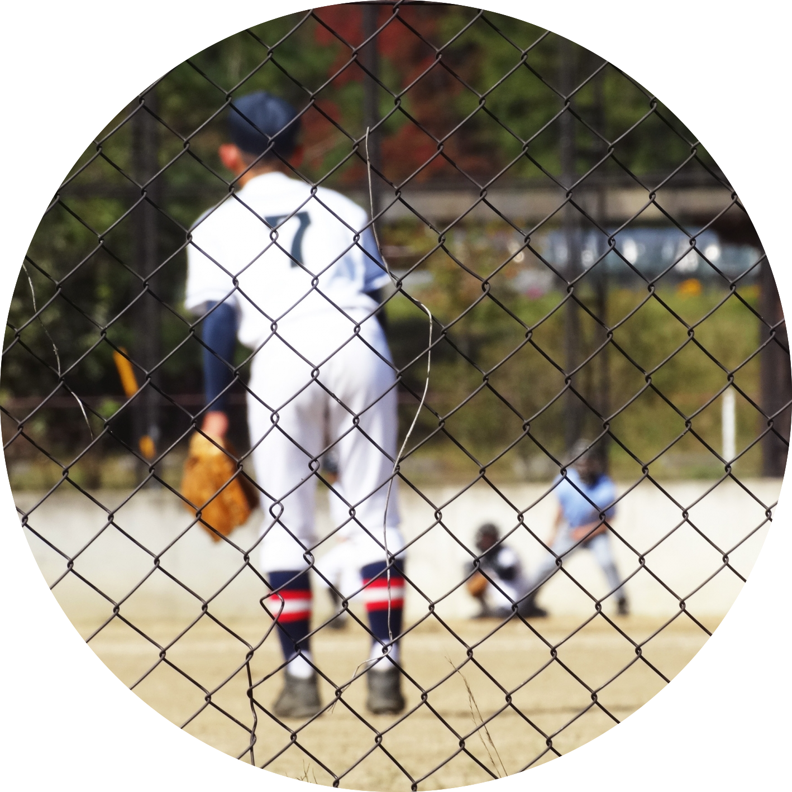
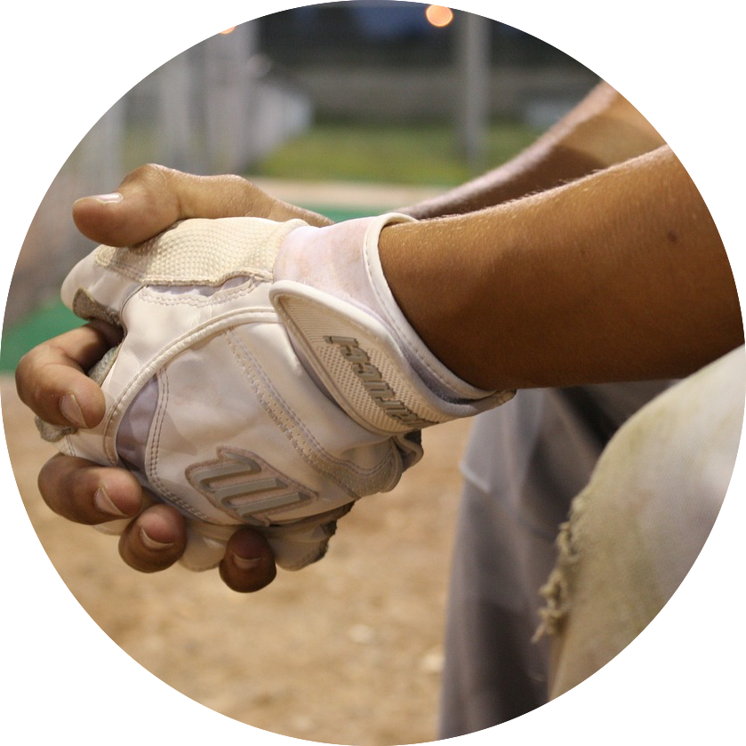
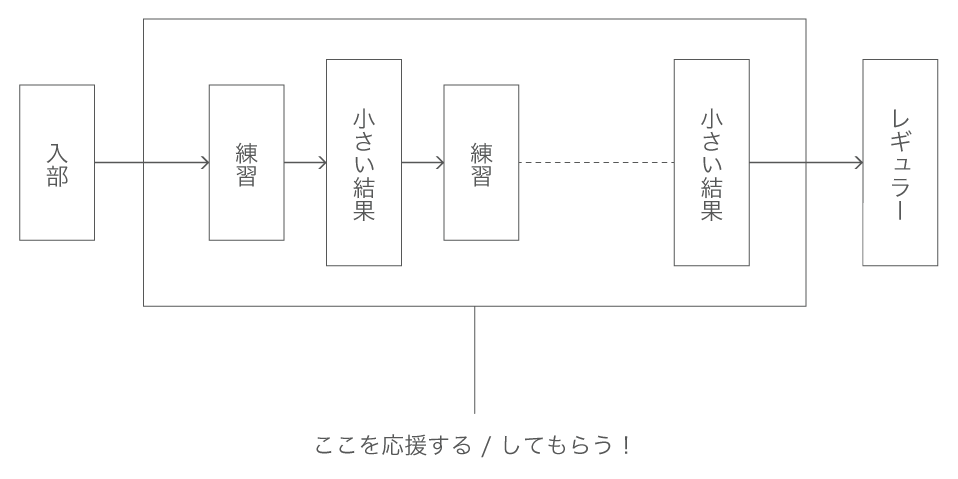
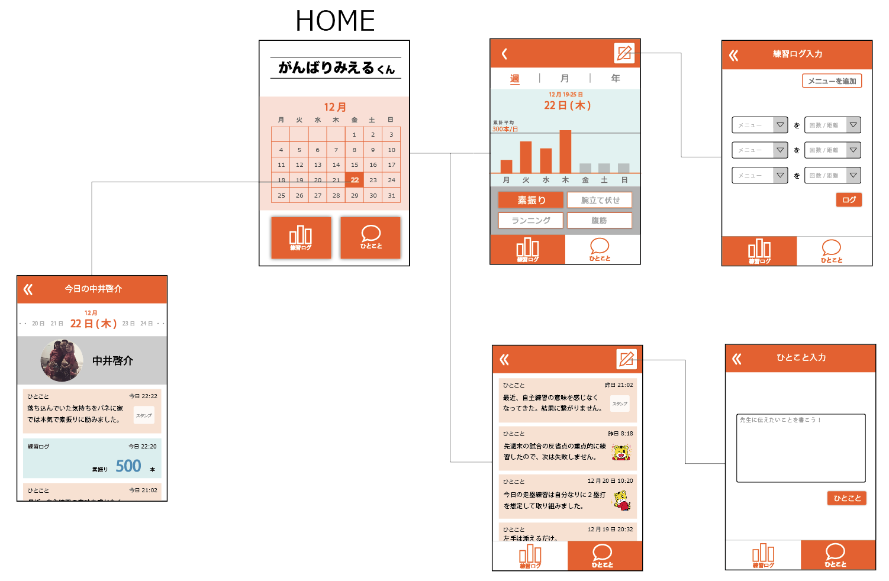
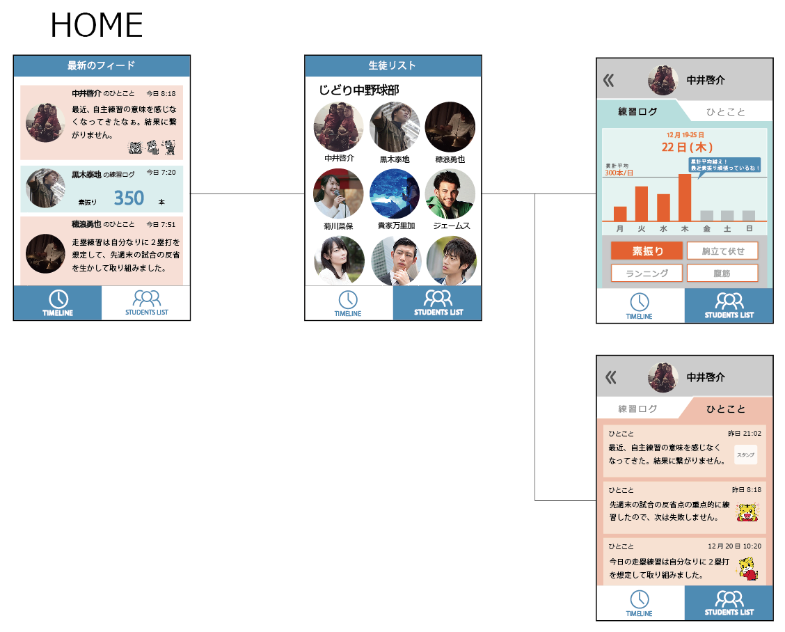

生徒の、「先生に気づいてほしいのに」
先生の、「生徒のことをもっと知りたいのに」
部活内で起きているすれ違いを解消します。
先生の、「生徒のことをもっと知りたいのに」
部活内で起きているすれ違いを解消します。
ABOUT
| 種類 | Andoirdアプリ |
|---|---|
| 使用ツール | MIT App Inventor |
| 役割 | 企画立案, コンセプト, UI設計, 実装 |
| 制作期間 | 2016年12月 丸2日間 |
| 制作人数 | 5人 |
| 成果 | Benesse Digital Plan Workshop 最優秀賞 |

MISSION
100万人に影響を与えるDigitalサービスを考えろ。
ただし、実装にはApp Inventorを用いること。
TARGET USER & ISSUE
電話でリサーチを行いました。
先生と生徒に着目しまし、それぞれが抱える悩みを分析しました。

生徒
- 中学生
- 部活に所属
- レギュラーになれるかどうかギリギリ
- 顧問の先生と話す時間が少ない
先生から見てもらえてない気がする。
先生
- 中学校の先生
- 部活動顧問
- クラス担任、委員会、授業の準備で忙しい。
忙しくて全員をみることができない。

SOLUTION
生徒の努力は、大きな結果を出すまで気づかれにくいです。しかし、大きな結果を出す前に、きっとその子は小さな努力を積み重ねて、小さな結果を出し続けているはずです。したがって、その過程を生徒は、先生から応援してもらえる機会が増えれば、先生は、生徒の積み重ね途中の努力に気付くことが出来れば、問題の解決につながると考えました。そのために、その過程を可視化するアプリを制作しました。
HOW TO USE
生徒
先生
-
入力
自主トレーニングをしたら、記録します。
-
確認 & スタンプ
生徒の練習記録を確認し、スタンプで返信します。
-
確認
先生からの返信を確認！
-
会話
廊下ですれ違った時、部活前に準備をしている時、先生は最近の頑張りを直接褒めてあげられます！生徒は、スタンプの意味を先生に直接聞くと、話が盛り上がるかも！
-
入力
「最近うまくいかないけど、とりあえず入力しよ...」
-
確認 & スタンプ
「あ、この子また自主トレしてる！頑張れ！！」
-
確認
「先生からいつもと違うスタンプ来た！見てくれてるのか！じゃあ明日も頑張ろう！！！」
DESIGN & FUNCTION
先生用と生徒用の2つのアプリを制作しました。
手軽に操作できるというアプリの強みをより生かしたデザインにしました。

生徒用
機能
- 練習ログ機能
- ひとこと日記
デザイン
- 入力データがグラフで可視化される
- 自分の成長を振り返ることができる

先生用
機能
- 生徒の頑張りを手軽に確認
- 生徒の努力にスタンプで返信
- アプリが生徒のデータを分析して、その子の努力の特徴を教えてくれる
デザイン
- 最初の画面は最新フィード
- 最初の画面だけで、すべての生徒に返信スタンプを押せる
- 画面数が少ない
- 生徒はアイコンと名前で表示
- より親身になれる